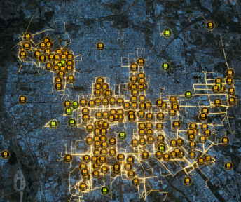

Hello there! I'm Liu Cao, currently a first-year PhD student in IIIS, Tsinghua University, advised by Prof. Mengdi Xu on Humanoid Robots and Whole-body Control. Before that, I received my bachelor's degree from EE, Tsinghua University.
My current interests lie in developing autonomous robots, particularly humanoid and mobile manipulators, capable of active perception and interacting in the real-world scenarios.
We present the Hybrid Internal Model, a method enabling the control policy to estimate environmental disturbances by only explicitly estimating velocity and implicitly simulating the system's response.

Detecting Vulnerable Nodes in Urban Infrastructure
Interdependent Network
Jinzhu Mao*,
Liu Cao*,
Chen Gao,
Huandong Wang,
Hangyu Fan,
Depeng Jin,
Yong Li *Equal contribution ACM SIGKDD Conference on Knowledge Discovery and Data Mining (SIGKDD), 2023
code
/
arXiv
We model the interdependent network as a heterogeneous graph and propose a system based on graph neural network with reinforcement learning, which can be trained on real-world data, to characterize the vulnerability of the city system accurately.
{kind=link}